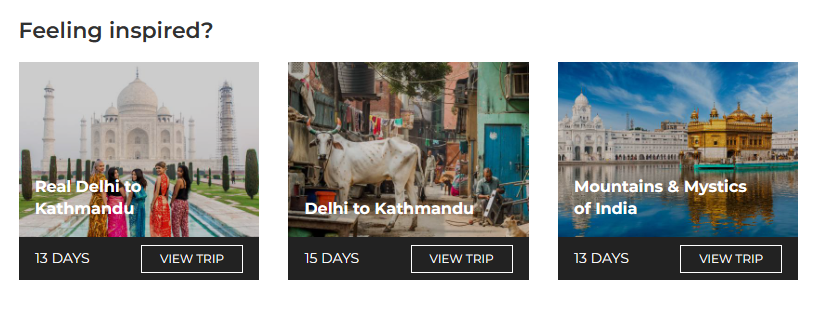

Is there a sight more iconic, more beautiful, more jaw-droppingly spectacular than the Taj Mahal?
Quite honestly, we can’t think of one.
At the very least, there’s no mausoleum more grand, no declaration of love more apparent than building a marble masterpiece for one’s favorite wife… And no better reason to travel than seeing its magnificence up close.
After all, this is art. Built in Agra, India between 1631 and 1648, it’s also history. And, of course, it’s the perfect opportunity to take some otherworldly photos. So, to help visitors prepare for their Taj Mahal travels, we’ve prepared a little guide, enlisting the help of some Intrepid experts – from Destination Managers to acclaimed trip leaders – to cover all the bases.
Coming up: what to bring, where to take the best snaps, what else to see in Agra (and beyond), and so much more…
That old saying ‘patience is a virtue’ really comes into its own when discussing the Taj Mahal.
Be prepared to be surrounded by hundreds (if not thousands) of people. These include Indian men, women and children who may ask to take photos with you.
To prepare with the help of other travelers and a local tour guide, consider taking a group tour. Intrepid have Taj-visiting trips that range from 8-day Golden Triangle tours (now with solo-only departures !) to 15-day trips dedicated to food, to 19-day trips combining the highlights of India and Nepal.
If you’re more pressed for time, you can check out the Taj Mahal on a whirlwind day tour from Delhi. Check out Urban Adventures to see the itinerary that we’d recommend for this. And while you’re at it, check out their day trips in Delhi, Jaipur, Varanasi and Mumbai!

The entrance queue can be pretty long during peak season but as long as you’re mentally prepared, you’ll be fine. What’s to come is more than worth the wait…
Always leave your valuables in the hotel. There are lockers available at the Taj but it’s best to have minimal belongings on you so you don’t spend too much time checking in.
You really only need to bring the following in one small bag:
- Passport
- Money
- Water
- Medicine
- Camera
- Phone
There is no dress code but you should still be respectful. If you want to enter the mosque, you will need to cover your head, shoulders and knees.
It gets hot in Agra and there is very little shade, so wear light clothing and make sure you wear sunscreen. Then again, Agra also gets very cold in winter (Nov-Feb) so layers are your friend too.
If you visit with Intrepid, you’ll be taken there earlier in the day or later in the afternoon to avoid the worst of the heat.

Useful tip from Ryan Turner, Intrepid’s Destination Manager for India:
No food is allowed inside.
Cigarettes and lighters are also not allowed.
Tripods and additional lighting equipment need prior permission to be brought with. Photography inside the mausoleum is prohibited. Most electronics (except cameras and small video cameras) are not allowed.
Be wary of touts, thieves and rude shop keepers. It’s a busy, high-pressure area, but keep your wits about you and you won’t need to worry!
Go early, wait for space to explore and photograph, and get yourself away from the crowds (if possible).

If you walk around to the right side of the Taj (as you approach the east gate), you can get an amazing photo from the riverbank behind the Taj. (Always go in groups and get a rickshaw to take you there and back cheaply.)
And simply focus on taking in all the magic. Even Intrepid leaders who see the Taj Mahal monthly (or more!) remain in awe of it. Sana Jinah , one of the company’s inspiring female tour guides, has some tips on how to do this:
She also recommends those looking for optimum conditions try visiting the Taj Mahal at sunrise on a clear day.
Everyone wants that iconic shot of themselves at the Taj Mahal. You know the one – where you sit on the bench and the grandeur of the marble mausoleum forms the backdrop.

But if you’re feeling creative and want to mix things up, there are tons of different angles worth seeking out.
Below are some photography suggestions from Intrepid’s General Manager in India, Pravin Tamang. (His photography is amazing – check it out!)
- Shot from the arch of the main doorway
- Capture the reflection of the fountains that line the route towards the Taj Mahal’s main platform
- Shot of Taj Mahal from the riverside with the reflection on the river
- Shot from the other side of the river, ‘Mehtab Bagh’, where you get a glimpse of Taj
- The Taj Mahal can also be shot from some parts of the Red Fort
You can also get great photos from the many rooftops of restaurants close to the Taj Mahal. Unfortunately, Agra does get pretty smoggy, so winter can often have poor visibility earlier in the day and around sunset. That said, this can make shots look very atmospheric!

First, go back to your hotel room, take a shower, and revel in the relative peace and quiet. Then explore these cool destinations both in and out of Agra:
What to do in Agra
The Taj Mahal is, quite clearly, the star of the show in this northern Indian city. But the Agra Fort is also stunning, especially if you didn’t get a chance to go to the Red Fort in Delhi. A 16th-century Mughal monument and UNESCO World Heritage site, it’s a sight not to be missed.
Despite being located on the Golden Triangle tourist circuit, there’s less to do in Agra than in many other Indian cities. It’s pretty polluted from the heavy industry (more on that later) and you likely won’t spend too long there, whatever the trip.
One way that Intrepid tries to show visitors a different perspective on the country is by (sometimes) taking travelers to Sheroes Hangout. Just blocks from the Taj Mahal, it’s a small cafe run entirely by female acid attack survivors. Here, victims of attacks are employed and tell their stories. It can be confronting, but also inspiring and memorable in equal measures.
SUBSCRIBE TO INTREPID'S NEWSLETTER FOR MORE TRAVEL GUIDES, COMPETITIONS,
GIVEAWAYS & MORE
Where to go outside of Agra
There are various great destinations only a few hours drive (well, 4-7) from the Taj Mahal. Of these, Orchha, Jaipur and Pushkar are all tourist-friendly, peaceful and beautiful places.
Orchha is a town that travelers often overlook. This is a shame, because it’s historic, laid-back and has a bunch of beautiful temples. It’s not always on tour itineraries, but you CAN visit it on this 15-day trip from Delhi to Kathmandu (cooking demo and palace visit included!).

Chaturbhuj Temple in Orchha
Jaipur is much more well-known. Also known as the ‘Pink City’ , the capital of Rajasthan is full of chaos, charm and unique architecture. Visit the hilltop Amber Fort, haggle in the enchanting bazaars, and consider taking a hot air balloon over the city to take it all in.
Pushkar is another underrated town. One of the oldest and most serene towns in India, it’s home to Pushkar Lake, a sacred spot for Hindus that’s utterly dazzling at sundown. Because of its holy nature, the vegetarian food here is simply unmissable. Visit on this 15-day trip all around Rajasthan.
As you may have read or heard, the Taj Mahal has recently been undergoing a very thorough clean. Yep, to be precise, a mud mask as of April 2018
Why? Air pollution from factories in Agra had been slowly turning the Taj Mahal’s ivory-white surfaces yellow – and this was one way of restoring them to their former glory. The work – applying a clay traditionally used to clean marble to the entire structure of the Taj – was carried out by the Archaeological Survey of India. And this work was part of a series of restorative projects carried out on the historic site.

Check out intrepid's range of small group trips in India. We have an adventure of everyone
(Image credits from top to bottom: Intrepid Travel, Stephanie Young, Intrepid Travel, Intrepid Travel, Sarah Dibdin, Chris Grundy, Hamish Cattell, David Williams)

BACK TO TOP